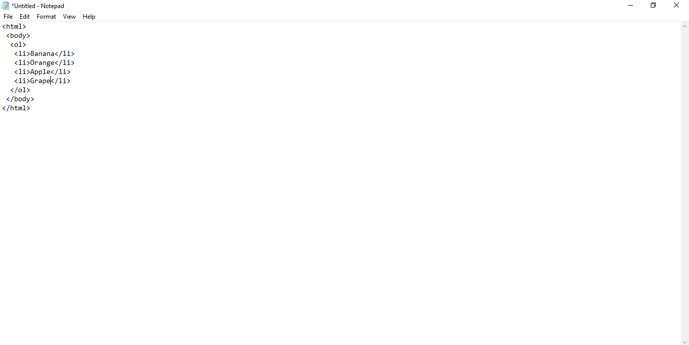

Most times we make different list of items. Bucket lists, shopping lists, ambition lists,e.t.c. HTML creates a way for you to list your items in your code if needed.
There are two(2) ways to list items in HTML.
An ordered list is one in which the items are arranged with numbers in ascending order i.e 1,2,3,4,e.t.c.
To make an ordered list you use the ol tag which also has a closing tag.
 Output:1.Banana.
2.Orange.
3.Apple.
4.Grape.
<-- -->